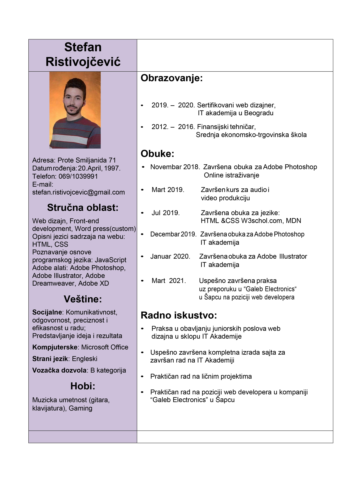
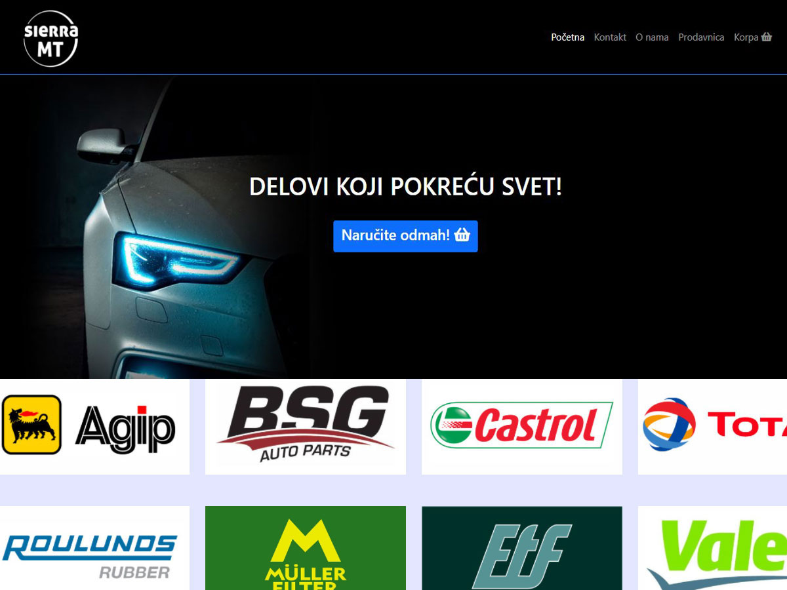
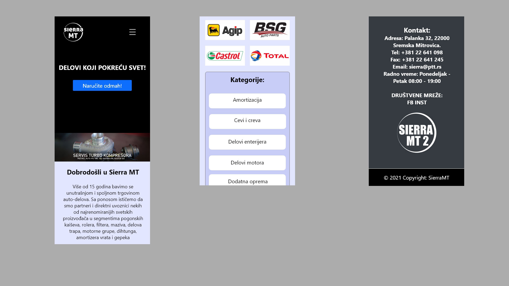
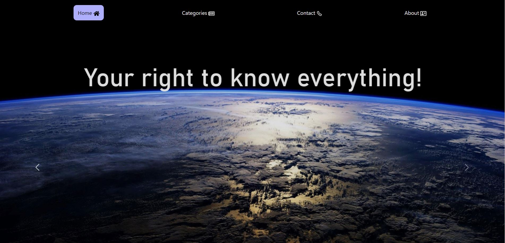
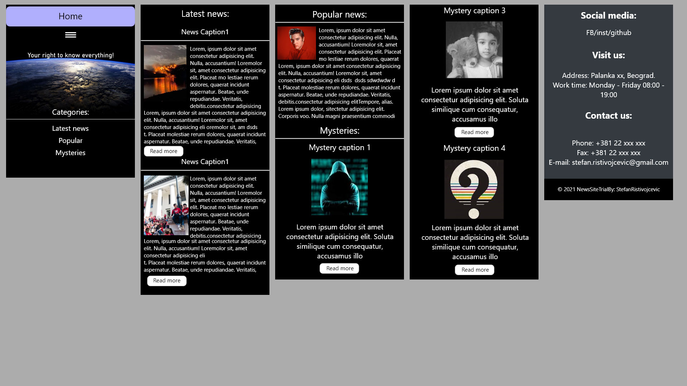
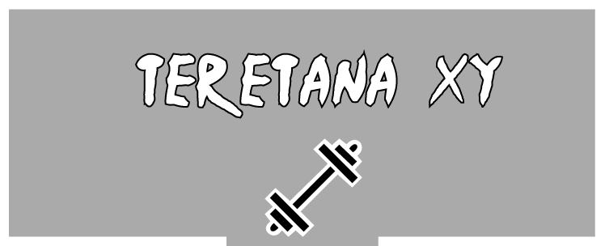
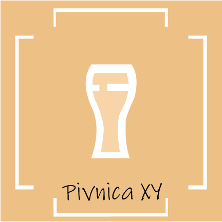

Web portfolio
Zovem se Stefan Ristivojčević i bavim se web dizajnom, razvojem weba i grafičkim dizajnom.
Završio sam IT akademiju u Beogradu, smer web dizajn i za definisanje sadržaja na internetu koristim:
HTML, CSS, JavaScript, Bootstrap, WordPress(gotove teme i custom teme), Adobe Photoshop, Adobe Illustrator, Adobe XD.
Za sebe bih rekao da sam: odgovorna osoba, posvećen poslu i motivisan za sticanje novih znanja!
CV:

Preuzmite CV u PDF fajlu

Online prodavnica auto delova radjena u WordPressu od nule (custom tema). Sajt sadrži dosta kategorija i potkategorija koje su neophodne za bolju klasifikaciju samih artikala. Ovaj sajt je napravljen za potrebe prezentacije i ubačena je samo nekolicina proizvoda. Sajt je responsive, prilagodjen je i za mobilne uredjaje i trenutno se nalazi na besplatnom hostingu(zbog toga zahteva više vremena za ulazak na sajt 30-40 sekundi) i možete ga posetiti na linku ispod!
Desktop:


Mobilni uredjaj:

Prototip početne strane sajta SierraMT uradjen u Adobe XD, varijanta za desktop(1920) i mobilni uredjaj(360).

Probni sajt informativne prirode napravljen za potrebe prezentacije. Za izradu sajta su korišćeni opisni jezici za definisanje sadržaja HTML i CSS i vrlo malo programskog jezika Java Script. Sajt je responsive, nalazi na GitHub hostingu i možete ga posetiti na linku ispod!
Desktop:


Mobilni uredjaj:

Prototip početne strane sajta NewsSite uradjen u Adobe XD, varijanta za desktop(1920) i mobilni uredjaj(360).

Probni logo uradjen za teretanu u Adobe Illustratoru, dimenzija 750x300.

Probni logo uradjen za pivnicu u Adobe Illustratoru, dimenzija 430x430.